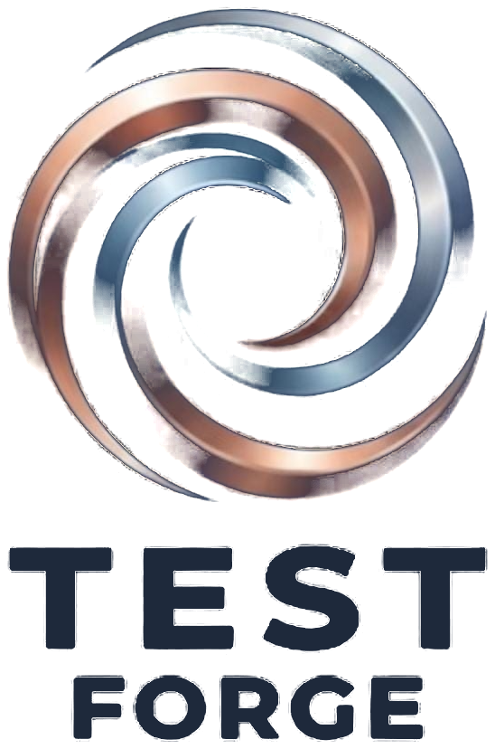
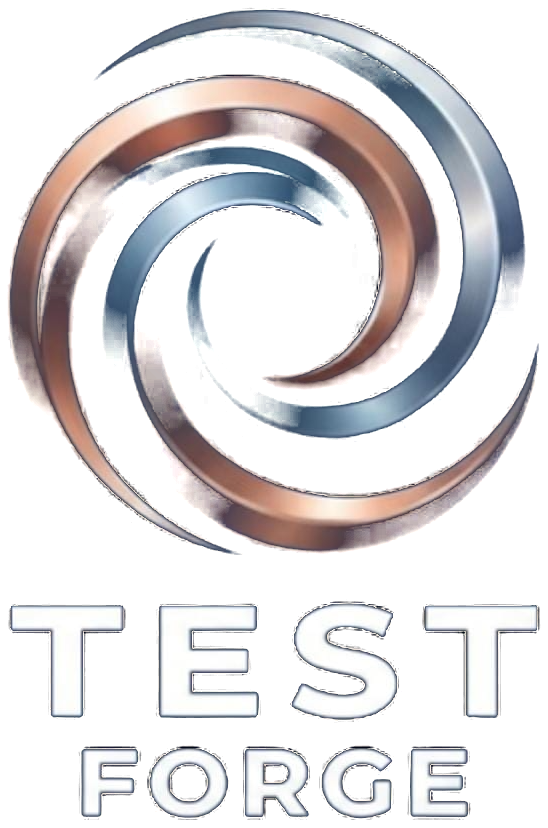

Jira
Bug TrackerGestión y seguimiento de incidencias.
Aprende los fundamentos de la calidad del software, estándares internacionales (ISO 25000),
ciclos de vida y metodologías ágiles a través de herramientas interactivas.
Pasá el cursor por encima (o tocá) para leer la introducción.
SGCS2026 es la plataforma educativa de Test Forge para aprender cómo se asegura la calidad del software.
Vas a recorrer los fundamentos y las normas ISO, las técnicas y herramientas de prueba, el ciclo de vida del desarrollo con sus modelos tradicionales y las metodologías ágiles: Scrum, Kanban y XP.


Conceptos, métricas y normas.
Niveles y técnicas de prueba.
Bug trackers, linters y testing.
Las 6 etapas del ciclo de vida.
Ventajas y desventajas.
Marcos de trabajo y Manifiesto.
Glosario, FAQ y ejercicios.
Metodologías lado a lado.
¿Qué metodología va con vos?
Fundamentos, técnicas de aseguramiento y herramientas de calidad
Conceptos clave, métricas y modelos ISO
Es el grado en que un producto de software satisface los requisitos establecidos y las necesidades implícitas de sus usuarios. Se evalúa desde dos miradas complementarias:
Un Sistema de Gestión de Calidad (SGC) reúne las políticas, procesos y responsabilidades que una organización usa para planificar, asegurar, controlar y mejorar la calidad de forma continua (ciclo PDCA: Planificar, Hacer, Verificar, Actuar).
Una métrica es una medida cuantitativa de un atributo del software o del proceso. Permiten tomar decisiones basadas en datos.
Norma internacional (publicada en 1991 y revisada en 2001) que definía un modelo de calidad del producto con 6 características:
Fue reemplazada por la familia ISO/IEC 25000 (SQuaRE).
Familia de normas Systems and software Quality Requirements and Evaluation. Su modelo de calidad del producto (ISO/IEC 25010) define 8 características:
Respecto de ISO 9126 incorpora Seguridad y Compatibilidad como características propias. La revisión de 2023 de ISO/IEC 25010 agregó además la Protección (safety) y renombró algunas características.
Pasá el mouse o tocá cada tarjeta para ver su descripción
Filtra las herramientas de calidad según su categoría
Gestión y seguimiento de incidencias.
Análisis automático de código.
Automatización de pruebas web.
Seguimiento de defectos open source.
Inspección continua de calidad.
Pruebas end-to-end en el navegador.
Framework de pruebas unitarias.
Gestión de casos y planes de prueba.
Gestión de pruebas integrada a Jira.
Ciclo de vida del software y modelos tradicionales
Las 6 etapas por las que pasa todo producto de software
Se relevan y documentan las necesidades del cliente y los usuarios.
Se define la arquitectura, los datos y las interfaces de la solución.
Se escribe el código siguiendo el diseño y los estándares acordados.
Se verifica y valida el software para encontrar defectos antes de entregarlo.
Se instala el sistema en el entorno de producción y se pone a disposición de los usuarios.
Se corrigen errores, se adapta a cambios y se agregan mejoras.
Ventajas y desventajas de cada modelo
Las etapas se ejecutan de forma secuencial: no se pasa a la siguiente hasta terminar la anterior. Cada fase genera documentación que sirve de entrada a la próxima.
Variante de la cascada que asocia cada etapa de desarrollo con un nivel de prueba: los requisitos con la aceptación, el diseño del sistema con las pruebas de sistema, el diseño detallado con la integración y la codificación con las pruebas unitarias.
El sistema se construye en varias iteraciones; cada una entrega un incremento funcional que se suma a lo anterior y recibe retroalimentación del cliente.
Hacé clic en una imagen para ampliarla
Scrum, Kanban, XP y el Manifiesto Ágil
Organiza el trabajo en Sprints de 1 a 4 semanas, con roles, eventos y artefactos definidos.
Ver en detalleVisualiza el trabajo en un tablero y limita el trabajo en curso (WIP) para mejorar el flujo.
Ver en detalleSe enfoca en prácticas técnicas: TDD, programación en parejas, integración continua y refactorización.
Ver bucle XP4 valores y 12 principios
Aunque valoramos los elementos de la derecha, valoramos más los de la izquierda.
Hacé clic en una imagen para ampliarla
Roles, eventos y artefactos
Los máximos en horas corresponden a un Sprint de un mes.
Seleccioná cada paso del ciclo
Arrastrá las tarjetas entre columnas (o usá las flechas). La columna «En progreso» tiene un límite WIP de 3.
Glosario, preguntas frecuentes, enlaces, ejercicios y herramientas interactivas
Buscá un término o saltá a una letra
No encontramos términos que coincidan con «». Probá con otra palabra.
El aseguramiento (QA) es preventivo: se enfoca en el proceso para evitar defectos. El control (QC) es detectivo: revisa el producto para encontrar defectos antes de entregarlo.
No. Ágil es una filosofía basada en el Manifiesto Ágil. Scrum es uno de los marcos de trabajo que aplican esa filosofía, al igual que Kanban o XP.
Cuando los requisitos están claros y estables, el dominio es conocido y existen regulaciones que exigen documentación formal en cada etapa.
Work In Progress (trabajo en curso). Limitar el WIP evita que el equipo empiece demasiadas tareas a la vez y ayuda a detectar cuellos de botella.
Sí. La familia ISO/IEC 25000 (SQuaRE) reemplazó a ISO/IEC 9126 y a ISO/IEC 14598, unificando el modelo de calidad y el proceso de evaluación.
No. Las pruebas muestran la presencia de defectos, no su ausencia. Reducen el riesgo, pero las pruebas exhaustivas son imposibles en la práctica.
Se abren en una pestaña nueva
Resolvé cada caso y después compará con la solución
Una aplicación permite iniciar sesión dejando la contraseña vacía. ¿Qué característica de ISO/IEC 25010 se ve afectada y qué tipo de prueba lo hubiera detectado?
Afecta principalmente a la Seguridad (autenticidad / confidencialidad) y también a la Adecuación funcional. Se detecta con pruebas de caja negra usando valores vacíos y límite, ya sea en pruebas unitarias del validador o en pruebas de sistema.
Un organismo público necesita un sistema con requisitos cerrados, regulaciones estrictas y auditorías en cada etapa. ¿Qué modelo recomendarías?
El Modelo en V (o Cascada): los requisitos son estables, la documentación formal es obligatoria y el modelo en V asegura trazabilidad entre cada requisito y su prueba, algo valioso en auditorías.
En un tablero Kanban la columna «En progreso» tiene límite 3 pero hay 5 tarjetas. ¿Qué debería hacer el equipo?
Dejar de tomar trabajo nuevo, concentrarse en terminar lo empezado (colaborar entre todos sobre las tarjetas bloqueadas) y analizar el cuello de botella para ajustar el proceso o el límite.
Para un Sprint de 2 semanas, ¿cuánto dura como máximo la Sprint Planning y cuánto el Daily Scrum?
La Sprint Planning tiene un máximo de 8 horas para un Sprint de un mes; en Sprints más cortos suele ser proporcionalmente menor (alrededor de 4 horas para 2 semanas). El Daily Scrum dura 15 minutos siempre.
Elegí dos metodologías para compararlas lado a lado
Respondé 5 preguntas y descubrí qué metodología se ajusta mejor a tu forma de trabajar
El equipo detrás de SGCS2026
EPET N° 20 · Sistemas de Gestión de Calidad del Software · Prof. Alejandro Zeballos
Gestión y organización del equipo en Trello.
Diseño visual y bocetos en Canva.
Armado de la estructura y los archivos del proyecto.
Revisión de contenidos y validación.
Los campos marcados con * son obligatorios